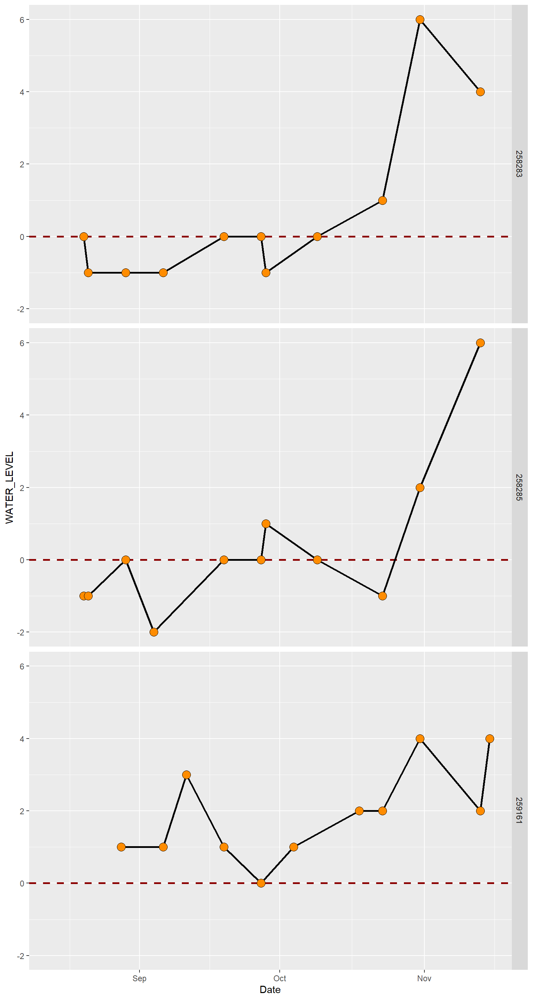

13 Population modeling
Date: 10/27/2020
Download the project folder here.
Make sure to download the entire folder (not just the contents).
You can open the Rproject directly by double-clicking on the file which will launch Rstudio, or once you have opened Rstudio open the project folder using File -> Open Project or using the Rproj icon in the top right corner above the environment panel.
Learning Objectives
After completing this lab you should understand
- the demographic process affecting population growth.
- the concept of open and closed populations and how this affects population models.
- the difference of discrete vs continuous time modeling (geometric vs exponential growth models).
- the differences between constrained and unconstrained growth models and the concept of density-dependent and density-independent growth (logistic growth models).
- the general shape of the three classic survivorship curves and how they affect life expectancy.
- how patterns of survivorship and fecundity affect the population growth rate.
- the fundamental principle of estimating the extinction probability of a population using a simple stochastic growth model.
13.1 Modeling population growth
A population is generally defined as a group of individuals of the same species that occupy the same area at the same time that freely interbreed with each other.
Temporal changes in population size (number of individuals) and density (number of individuals per area) are described as population dynamics.
► Question 13.1
List the four fundamental demographic processes that increase and decrease population size.
Based on these four fundamental processes we can formulate a simple equation to describe population growth in a set time interval as
\[ N_{t+1} = N_{t} + B_{t} - D_{t} + I_{t} - E{t} \] for
- \(N_{t}\): size (density) of a population at time point \(t\)
- \(N_{t+1}\): size (density) of a population at one time point later
- \(B_{t}\): total number of births occurring between \(t\) and \(t+1\)
- \(D_{t}\): total number of deaths occurring between \(t\) and \(t+1\)
- \(I_{t}\): total number of immigrants entering the population between \(t\) and \(t+1\)
- \(E_{t}\): total number of emigrants leaving a population between \(t\) and \(t+1\)
► Question 13.2
Briefly compare and contrast the following characteristics of of population models: closed vs. open population, discrete vs continuous growth, constrained vs unconstrained growth, and density-dependent vs density-independent demographic parameters.
► Question 13.3
Discuss whether it is easier to model a closed or open population and how making (incorrect) assumptions about migration could impact estimates of minimum viable population sizes.
Throughout this tutorial, we are going to make the assumption that we have a closed population.
This simplifies our general population equation to
\[ N_{t+1} = N_{t} + B_{t} - D_{t} \] The first step to modeling population growth converting (raw observed) birth and death rates to per capita rates, i.e. the number of births (deaths) per individual per unit time. Essentially, these values give you the probability of an individual giving birth or dying within the specified time unit.
We can calculate the per capita birth rate as
\[ b_{t} = \frac{B_{t}}{N_{t}} \]
and, analogously, the per capita death rate as
\[ d_{t} = \frac{D_{t}}{N_{t}} \]
Finally, using our per capita birth/death rates our general population model is described as
\[ N_{t+1} = N_{t} + b_{t}N_{t} - d_{t}N_{t} \]
13.2 Geometric growth
Geometric growth models are discrete-time models that assume unconstrained growth. In addition, the average number of births per individual \(b\) and the average risk of dying \(d\) are density-independent which means that they are constant across the time period being modeled.
► Question 13.4
Briefly discuss whether you think density-independent birth/death rates are a realistic assumption (limitations) along with the benefits of this assumption for population modeling.
These assumptions allow us to formulate a simple population model as
\[ N_{t+1} = N_{t} + (b-d)N_{t} \] The parameter \(R = (b-d)\) is called the geometric rate of increase.
\[ N_{t+1} = N_{t} + RN_{t} \] Because we are more interested in the rate of change in the population size \(\Delta N_{t}\), we will re-structure our equation as
\[ \Delta N_{t} = N_{t+1} - N_{t} = RN_{t} \] From this it becomes evident that the rate of change in population size \(R\) is a constant and our resulting geometric growth model is density-independent with the change in population size being proportional to population size.
This means \(R\) can also be interpreted as the per capita rate of change in population size \(R = \frac{\Delta N_{t}}{N_{t}}\).
A second parameter we are interested in, is the finite rate of increase \(\lambda\).
We can understand the relationship between \(R\), \(\lambda\) and \(N\) by looking at the following set of equations.
\[ N_{t+1} = N_{t} + RN_{t} \] \[ N_{t+1} = (1+R)N_{t} \] \[ N_{t+1} = \lambda N_{t} \] \[ \frac{N_{t+1}}{N_{t}} = \lambda \]
Because \(\lambda\) is the ratio of population size from one time point to the next, we can determine the rate of increase without knowing the birth and death rates per se. This means that in a very practical way it is possible determine \(\lambda\) from monitoring data, provided we have at least two population size estimates at different time points.
Let’s take a closer look at how population sizes change under the geometric growth model.
# birth/death rate
b <- 1.25
d <- 0.5
# growth rate
R <- b-d
# starting population size
Nt <- 10
# population size
geom <- data.frame(t = 0,
total_births = Nt*b,
total_deaths = Nt*d,
Nt = Nt,
delta_N = 0,
change_popsize = R)
for(t in 1:25){
t_prev <- t-1
Nt_prev <- geom %>%
filter(t == t_prev) %>%
pull(Nt)
df <- data.frame(t = t) %>%
mutate(total_births = Nt_prev*b,
total_deaths = Nt_prev*d,
Nt = Nt_prev+total_births-total_deaths,
delta_N = Nt-Nt_prev,
change_popsize = delta_N/Nt_prev)
geom <- bind_rows(geom, df)
}Let’s look at the change in population size, birth and death rates over time.
tidy <- geom %>%
pivot_longer(cols = 2:5, names_to = "demographic_param", values_to = "value")
ggplot(tidy, aes(x = t, y = value, shape = demographic_param, color = demographic_param)) +
geom_line() +
geom_point(fill = "white", size = 3) +
scale_shape_manual(values = c(21, 22, 23, 24)) +
labs(x = "time (t)", y = "number of indv")Figure 13.1: Change in demographic parameters over time (t) for a geometric growth model.
► Question 13.5
Define what each of these demographic parameter represents and how it changes over time. Keep in mind that adding the line is slightly misleading because it implies that the increase in population size is smooth and continuous; really the population remains unchanged from time t to t+1 and the graph should look more like steps.
Let’s look at the per capita rate of change over time.
ggplot(geom, aes(x = t, y = change_popsize)) +
geom_line() +
geom_point(fill = "white", shape = 21, size = 3) +
labs(x = "time (t)", y = "change in population size")Figure 13.2: Change in per capita growth rate over time for a geometric growth model.
► Question 13.6
Describe the change in the per capita change in population size over time. Then compare this value to R and explain what this tells you about the population growth model.
Now, let’s compare how our demographic parameter changes as population size increases.
tidy <- geom %>%
select(Nt, total_births, total_deaths, delta_N) %>%
pivot_longer(cols = 2:4, names_to = "demographic_param", values_to = "value")
ggplot(tidy, aes(x = Nt, y = value, shape = demographic_param, color = demographic_param)) +
geom_line() +
geom_point(fill = "white", size = 3) +
scale_shape_manual(values = c(21, 22, 23, 24)) +
labs(x = "population size Nt", y = "indv")Figure 13.3: Relationship of demographic parameters and population size.
► Question 13.7
Describe how our demographic parameters change as population size increases and explain this relationship using the geometric growth model.
Before we move on let’s consider how the relationship of birth and death rates determine population growth. We are assuming that \(b\) and \(d\) are constant, and for our initial model that \(b > d\).
► Question 13.8
Give a brief description in how you think the population size will change for b = d and for b > d. Manipulate our geometric growth model (see code chunk below) to test your hypothesis for each scenarios by changing the values for b and d and then describe your results.
# birth/death rate
b <- 1.25
d <- 0.5
# growth rate
R <- b-d
# starting population size
Nt <- 100
# population size
geom <- data.frame(t = 0,
total_births = Nt*b,
total_deaths = Nt*d,
Nt = Nt,
delta_N = 0,
change_popsize = 0)
for(t in 1:25){
t_prev <- t-1
Nt_prev <- geom %>%
filter(t == t_prev) %>%
pull(Nt)
df <- data.frame(t = t) %>%
mutate(total_births = Nt_prev*b,
total_deaths = Nt_prev*d,
Nt = Nt_prev+total_births-total_deaths,
delta_N = Nt-Nt_prev,
change_popsize = delta_N/Nt_prev)
geom <- bind_rows(geom, df)
}
tidy <- geom %>%
pivot_longer(cols = 2:5, names_to = "demographic_param", values_to = "value")
ggplot(tidy, aes(x = t, y = value, shape = demographic_param, color = demographic_param)) +
geom_line() +
geom_point(fill = "white", size = 3) +
scale_shape_manual(values = c(21, 22, 23, 24)) +
labs(x = "time (t)", y = "individuals")13.3 Exponential growth
Many populations reproduce continuously and not in discrete breeding seasons resulting in continuous growth which we can describe using the exponential model of population growth.
Here, we calculate the instantaneous rate of change in population size as
\[ \frac{dN}{dt} = rN \]
with \(r\) as the intrinsic (instantaneous) rate of increase.
This allows us to calculate the per capita rate of population growth rate and with some mathematical acrobatics that we will skip here, derive our classic exponential population growth model.
\[ \frac{dN/dt}{N} = r \]
\[ N_{t} = N_{0}e^{rt} \]
The intrinsic rate of increase \(r\) is comparable to the geometric rate of increase \(R\) from our geometric growth though there are some differences in their properties due to the discrete vs continuous growth. Basically, continuous growth is faster given the same value of \(R\) and \(r\) - this sounds a little abstract so we will compare these two growth models to understand what this looks actually looks like in practice.
We will start by modeling population growth for the same rates of increase of a population size for geometric and exponential growth.
# exponential growth
r <- 0.25
# geometric growth
R <- 0.25
# initial pop size
Nt <- 1
# population size
comp <- data.frame(t = 0,
Nt_exp = Nt,
Nt_geom = Nt,
r = 0.25,
R = 0.25)
for(t in 1:25){
t_prev <- t-1
Nt_prev_exp <- comp %>%
filter(t == t_prev) %>%
pull(Nt_exp)
Nt_prev_geom <- comp %>%
filter(t == t_prev) %>%
pull(Nt_geom)
df <- data.frame(t = t) %>%
mutate(Nt_exp = Nt*(exp(1)^(r*t)),
Nt_geom = (1+R)^t*Nt,
r = log(Nt_exp/Nt_prev_exp),
R = Nt_geom/Nt_prev_geom-1)
comp <- bind_rows(comp, df)
}Now, let’s compare our two growth curves.
tidy <- comp %>%
pivot_longer(cols = 2:3, names_to = "Nt", values_to = "Indv")
ggplot(tidy, aes(x = t, y = Indv, shape = Nt, color = Nt)) +
geom_line() +
geom_point(fill = "white", size = 3) +
scale_shape_manual(values = c(21, 22, 23, 24)) +
labs(x = "time (t)", y = "population size")Figure 13.4: Change in population size for two populations with the same rate of increase modeled using discrete and continuous growth.

► Question 13.9
Compare and contrast the change in population size over time for two populations with the same population growth rate but one conforming to geometric and the other to exponential growth to explain the difference between discrete and continuous growth. Keep in mind that adding the line is slightly misleading for the geometric growth model because it implies that the increase in population size is smooth and continuous; really the population remains unchanged from time t to t+1 and the graph should look more like steps.
13.4 Logarithmic growth
Logarithmic growth can be modeled as either continuous or a discrete growth. The main difference to our previous two models is that logarithmic growth is constrained.
Remind yourself of the description of geometric growth using birth and death rates.
\[ N_{t+1} = N_{t} + b_{t}N_{t} - d_{t}N_{t} \] We know that for many populations the assumption that birth and death rates are constants is not realistic. Logarithmic growth can account for changes of birth and death rate as the population size changes, i.e. here we are modeling density-dependent growth which reflects changes in birth/death rate as the population size changes.
► Question 13.10
One of the most common patterns we see in populations is that birth and death rates may change over time as a result of intraspecific competition - explain what this means.
We will represent changes in per capita birth/death rates in our population using
- \(b'\): amount by which per capita birth rate changes in response to adding one individual to a population
- \(d'\): amount by which per capita death rate changes in response to adding one individual to a population
This extends our general, unconstrained geometric-model to a discrete-time logistic model
\[ N_{t+1} = N_{t} + (b + b'_{t}N_{t})N_{t} - (d + d'_{t}N_{t})N_{t} \] Here, \(b\) and \(d\) represent our per capita birth rates when our population is very small (intrinsic birth/death rate). Typically, under those conditions there is an abundance of resources resulting in the expectation that the per capita birth rate is high while death rates are low - this will result in the population growing in fashion very similar to geometric growth. As the population size increases, resources are shared among an increasing number of individuals meaning that each individual will have less resources available overall. As a result, we would expect the per capita birth rate to decline (\(b' < 0\)) in proportion to the increase in \(N_{t}\). Further, we would expect the opposite pattern for the death rate which will increase (\(d' > 0\)).
Logistic growth is an important model for ecology, as it can be used to build more complex models (e.g. accounting for multiple interacting populations/species) to be able to study inter- and intraspecific competition or predator-prey interactions. It can also used to make management decisions for fish and other exploited species and to understand sustainable yields.
Because the impact of per capita birth/death rates changing with population size, we would expect to have an equilibrium population size where the population size is stable and no longer changes over time.
\[ N_{eq} = \frac{b-d}{d'-b'} \]
This (theoretical) equilibrium is equivalent to the carrying capacity \(K\) of a population, which is the largest population size that can be supported indefinitely given the resources of its habitat.
Typically, logistic growth is expressed by introducing a term that adjusts the population growth rate as the population size \(N\) reaches \(K\).
Assuming continuous growth this would look like this:
\[ \frac{dN}{dt} = rN(\frac{K-N}{K}) \]
and for geometric growth it can be expressed as
\[ \Delta N_{t} = RN_{t}(\frac{K-N_{t}}{K}) \]
or analogously as
\[ N_{t+1} = N_{t} + RN_{t}(\frac{K-N_{t}}{K}) \]
When presented this way it is easy to see how for small population sizes the term \(\frac{K-N_{t}}{K}\) is going to be very close to 1 and therefore, initial growth will look very similar to geometric growth. However, since \(N_{t}\) will increase over time, \(R\) will accelerate (as opposed to staying constant for geometric growth). Finally, as \(N_{t}\) approaches \(K\) that term become increasingly smaller, thus slowing population growth as the population reaches its carrying capacity.
To understand this better, let’s simulate population growth using a logistic model.
# birth/death rate
b <- 1.25
d <- 0.5
b_dep <- -0.01
d_dep <- 0.005
# carrying capacity
K <- (b-d)/(d_dep-b_dep)
# growth rate
R <- b-d
# starting population size
Nt <- 1
# population size
logist <- data.frame(t = 0) %>%
mutate(Nt = Nt,
percapita_birth = b+(b_dep*Nt),
total_birth = percapita_birth*Nt,
percapita_death = d+(d_dep*Nt),
total_death = percapita_death*Nt,
delta_N = 0,
popsize_change = 1)
for(t in 1:25){
t_prev <- t-1
Nt_prev <- logist %>%
filter(t == t_prev) %>%
pull(Nt)
Nt_new <- logist %>%
filter(t == t_prev) %>%
mutate(Nt_new = Nt + total_birth-total_death) %>%
pull(Nt_new)
df <- data.frame(t = t) %>%
mutate(Nt = Nt_new,
percapita_birth = b+(b_dep*Nt_new),
total_birth = percapita_birth*Nt_new,
percapita_death = d+(d_dep*Nt_new),
total_death = percapita_death*Nt_new,
delta_N = Nt_new-Nt_prev,
popsize_change = delta_N/Nt_prev)
logist <- bind_rows(logist, df)
}First, let’s take a look at how the population size changes over time.
ggplot(logist, aes(x = t, y = Nt)) +
geom_line() +
geom_point(shape = 21, fill = "white", size = 3) +
labs(x = "time (t)", y = "population size (Nt)")Figure 13.5: Change in population size Nt over time under a logistical growth model.
► Question 13.11
Give a brief description of how the population size changes over time under the logistic growth model.
Next, let’s look at how the per capita birth and death rates change with population size.
tidy <- logist %>%
select(Nt, percapita_birth, percapita_death) %>%
pivot_longer(cols = 2:3, names_to = "rates", values_to = "values")
ggplot(tidy, aes(x = Nt, y = values, color = rates, shape = rates)) +
geom_line() +
geom_point(size = 3, fill = "white") +
scale_shape_manual(values = c(21, 22)) +
labs(x = "population size (Nt)", y = "per capita birth/death rate")Figure 13.6: The relationship of per capita birth/death rate and population size for a logistical growth.

► Question 13.12
Give a brief description of how per capita birth and death rates change over time in the context of logistical growth.
Finally, we are going to look at how our rates of change are related to population size.
Let’s start with our rate of change in population size.
ggplot(logist, aes(x = Nt, y = delta_N)) +
geom_line() +
geom_point(shape = 21, size = 3, fill = "white") +
labs(x = "population size (Nt)", y = "rate of change in Nt")Figure 13.7: The relationship of the change in population size and the population size for a logistical growth.

Now, let’s look at our per capita rate of change
ggplot(logist, aes(x = Nt, y = popsize_change)) +
geom_line() +
geom_point(shape = 21, size = 3, fill = "white") +
labs(x = "population size (Nt)", y = "per capita rate of change in N")
► Question 13.13
Give a brief description of the total and per capita rate of change in population size changes with increasing population size and compare this to the behavior of these demographic parameters for geometric and exponential growth.
► Question 13.14
Assume that a population has reached equilibrium (N is K). Then, there is a sudden change in temperature which results in a loss of their main food source, in other words the carrying capacity has decreased and N is now larger than K. Explain what you think will happen in terms of population size (use per capita birth and death rates to explain the effect).
► Question 13.15
We have been thinking of logistic growth mainly in the context of something like intraspecific competition which would result in per capita birth/death rates decreasing/increasing with population size. This is not necessarily always the case. It is also possible that birth rates in crease with population size (e.g. it is easier to find a mate) or that death rates increase for small populations (e.g. because of increaseing exposure to predators, cooperative breeding/hunting). Explain what how you think population growth would look like in those cases.
13.5 Life tables
A life table records the survival and reproductive rates of a population by age, size or developmental stage (e.g. egg, hatchling, juvenile, adult) which can give us increased insight into patterns and causes of mortality.
There are two ways to classify life tables, first based on how demographic groups are defined as either age-based, size-based, or stage-based life tables, and second, by how the information is recorded as either cohort life tables or static life tables.
Age-based life tables classify individuals by age; individuals that have lived < 1 year are considered Age 0 etc. Age is usually represented by x to describe survivorship (\(l_{x}\)) or fecundity (\(m_{x}\)) per age class.
Size/stage-based life tables group individuals by size or developmental stage which is more practical for species where their ecological role changes over the course of their life time or they are difficult to age.
Cohort life tables follow the survival & reproduction of all members of a cohort which is a set of individuals born/batched/recruited into a population during a specific time interval, frequently on an annual basis. To build this type of life table you would record the number of individuals added to a population in year \(x\) and then record the number of individuals remaining from that cohort for each consecutive year until no more remain (Survivorship \(S_{x}\)). Similarly, you would record the number of offspring born to individuals in each age group or stage (fecundity \(b_{x}\))1 Unfortunately, there are some inconsistencies as to how the fecundity is defined. Some scientists will distinguish between fecundity as the number of eggs produced per female per year and fertility as the number of offspring produced per female per year. For simplicity we are going to assume that these are the same for most of this lab.
Static life tables list the number of living individuals for each demographic group in a population along with their reproductive output. For some species, e.g. with long life-spans, it is difficult to follow a cohort throughout and monitor their survivorship and reproductive rates. Instead, for each year (or other specified time span) the number of individuals in each age group (or other class, e.g. stage) is counted. Given the assumption that age-specific survivorship and reproductive rates have remained constant over time these tables can be used analogous to cohort life tables; though it can lead to artifacts (e.g. negative mortality rates) that can be dealt with in more or less straightforward ways - we will avoid this be using cohort life tables.
Survivorship and reproductive rates form the “backbone” of life tables. They can be used to calculate other important demographic parameters such as age-specific rates of survival, mortality, fecundity, life-expectancy along with generation time, net reproductive rate and the intrinsic growth rate of a population.
We are going to explore survivorship curves and how to use a life table to explore future growth/decline of a population using an age-based cohort life table.
13.6 Survivoship curves
We generally distinguish between three survivorship types (Type I, II, and III).
Let’s load a tab-delimted file that has survivorship rates for three species that fit each of those survivorship curves and print a table.
| Age | Sx_Type-I | Sx_Type-II | Sx_Type-III |
|---|---|---|---|
| 0 | 1000 | 2048 | 10000 |
| 1 | 990 | 1024 | 100 |
| 2 | 970 | 512 | 30 |
| 3 | 940 | 256 | 20 |
| 4 | 900 | 128 | 18 |
| 5 | 850 | 64 | 17 |
| 6 | 750 | 32 | 16 |
| 7 | 500 | 16 | 15 |
| 8 | 200 | 8 | 14 |
| 9 | 40 | 4 | 13 |
| 10 | 1 | 2 | 12 |
| 11 | 0 | 0 | 0 |
► Question 13.16
Briefly explain the content and format of the table. Use key descriptions such as age-based, cohort table, etc.
The first thing we need to do is calculate the standardized survival schedule (\(l_{x}\)) because we are comparing cohorts of different initial sizes. To do this we will standardize all cohorts to their initial size at time 0 (\(S_{x}\)) to get the proportion of original numbers surviving to the beginning of each time interval
\[ l_{x} = \frac{S_{x}}{S_{0}} \] Let’s calculate this for our life-table.
# initial sizes (S0) for each curve
S0_I <- survivorship %>%
filter(Age == 0) %>%
pull(`Sx_Type-I`)
S0_II <- survivorship %>%
filter(Age == 0) %>%
pull(`Sx_Type-II`)
S0_III <- survivorship %>%
filter(Age == 0) %>%
pull(`Sx_Type-III`)
# calculate standardized survival
survivorship <- survivorship %>%
mutate(lx_Type_I = `Sx_Type-I`/S0_I,
lx_Type_II = `Sx_Type-II`/S0_II,
lx_Type_III = `Sx_Type-III`/S0_III)Now, let’s plot that data
tidy <- survivorship %>%
pivot_longer(cols = 5:7, names_to = "survivorship", values_to = "proportion")
ggplot(tidy, aes(x = Age, y = proportion, shape = survivorship, color = survivorship)) +
geom_line() +
geom_point(fill = "white", size = 3) +
scale_shape_manual(values = c(21, 22, 23)) +
labs(x = "Age (x)", y = "survivorship probability lx")
Typically, survivorship curves are plotted on a logarithmic scale.
ggplot(tidy, aes(x = Age, y = proportion, shape = survivorship, color = survivorship)) +
geom_line() +
geom_point(fill = "white", size = 3) +
scale_shape_manual(values = c(21, 22, 23)) +
scale_y_log10() +
labs(x = "Age (x)", y = "survivorship probability lx")
► Question 13.17
Give a brief description of the three survivorship types. Use an example to explain what type of characteristics species with each survivorship type would have.
\(l_{x}\) essentially gives us the the probability that an individuals survives from birth to age \(x\). To determine the probability of an individuals who has already survived to age \(x\) to age \(x+1\) we calculate the age-specific survivorship \(g_{x}\) as
\[ g_{x} = \frac{S_{x+1}}{S_{x}} \]
Let’s calculate that for our life table.
# create empty data frame for results
tmp <- data.frame(Age = 0,
gx_Type_I = 1,
gx_Type_II = 0.5,
gx_Type_III = 0)
for(x in 1:10){
values1 <- survivorship %>%
filter(Age == x)
values2 <- survivorship %>%
filter(Age == x+1)
df <- data.frame(Age = x) %>%
mutate(gx_Type_I = pull(values2, `Sx_Type-I`)/pull(values1, `Sx_Type-I`),
gx_Type_II = pull(values2, `Sx_Type-II`)/pull(values1, `Sx_Type-II`),
gx_Type_III = pull(values2, `Sx_Type-III`)/pull(values1, `Sx_Type-III`))
tmp <- bind_rows(tmp, df)
}
survivorship <- survivorship %>%
left_join(tmp)
kable(
survivorship
)| Age | Sx_Type-I | Sx_Type-II | Sx_Type-III | lx_Type_I | lx_Type_II | lx_Type_III | gx_Type_I | gx_Type_II | gx_Type_III |
|---|---|---|---|---|---|---|---|---|---|
| 0 | 1000 | 2048 | 10000 | 1.000 | 1.0000000 | 1.0000 | 1.0000000 | 0.5 | 0.0000000 |
| 1 | 990 | 1024 | 100 | 0.990 | 0.5000000 | 0.0100 | 0.9797980 | 0.5 | 0.3000000 |
| 2 | 970 | 512 | 30 | 0.970 | 0.2500000 | 0.0030 | 0.9690722 | 0.5 | 0.6666667 |
| 3 | 940 | 256 | 20 | 0.940 | 0.1250000 | 0.0020 | 0.9574468 | 0.5 | 0.9000000 |
| 4 | 900 | 128 | 18 | 0.900 | 0.0625000 | 0.0018 | 0.9444444 | 0.5 | 0.9444444 |
| 5 | 850 | 64 | 17 | 0.850 | 0.0312500 | 0.0017 | 0.8823529 | 0.5 | 0.9411765 |
| 6 | 750 | 32 | 16 | 0.750 | 0.0156250 | 0.0016 | 0.6666667 | 0.5 | 0.9375000 |
| 7 | 500 | 16 | 15 | 0.500 | 0.0078125 | 0.0015 | 0.4000000 | 0.5 | 0.9333333 |
| 8 | 200 | 8 | 14 | 0.200 | 0.0039063 | 0.0014 | 0.2000000 | 0.5 | 0.9285714 |
| 9 | 40 | 4 | 13 | 0.040 | 0.0019531 | 0.0013 | 0.0250000 | 0.5 | 0.9230769 |
| 10 | 1 | 2 | 12 | 0.001 | 0.0009766 | 0.0012 | 0.0000000 | 0.0 | 0.0000000 |
| 11 | 0 | 0 | 0 | 0.000 | 0.0000000 | 0.0000 | NA | NA | NA |
Now, let’s plot our age-specific survival.
tidy <- survivorship %>%
pivot_longer(cols = 8:10, names_to = "survivorship", values_to = "proportion")
ggplot(tidy, aes(x = Age, y = proportion, shape = survivorship, color = survivorship)) +
geom_line() +
geom_point(fill = "white", size = 3) +
scale_shape_manual(values = c(21, 22, 23)) +
labs(x = "Age (x)", y = "age-specific survivorship lx")► Question 13.18
Give a brief description of each the age-specific survivorship curves for three survivorship types.
Now, we can calculate the life expectancy \(e_{x}\) wjoc describes how much longer an individual of a specific age is expected to live. To do this, we first calculate the proportion of survivors at the mid-point of each time interval as
\[ L_{x} = \frac{l_{x}+l_{x+1}}{2} \] Then we calculate the sum of all \(L_{x}\) from the age group \(n\) to the oldest age (\(k\)):
\[ T_{x} = \sum_{x=n}^{k}L_{x} \] and the age-specific life expectancy as
\[ e_{x} = \frac{T_{x}}{l_{x}} \] Frequently, the life expectancy is used synonymous as the life expectancy at age 0 (\(e_{0}\)).
Let’s determine the life expectancy for our table.
# calculate Lx
tmp <- data.frame(Age = 11,
Lx_Type_I = 0,
Lx_Type_II = 0,
Lx_Type_III = 0)
for(x in 0:10){
values1 <- survivorship %>%
filter(Age == x)
values2 <- survivorship %>%
filter(Age == x+1)
df <- data.frame(Age = x) %>%
mutate(Lx_Type_I = (pull(values2, lx_Type_I)+pull(values1, lx_Type_I))/2,
Lx_Type_II = (pull(values2, lx_Type_II)+pull(values1, lx_Type_II))/2,
Lx_Type_III = (pull(values2, lx_Type_III)+pull(values1, lx_Type_III))/2)
tmp <- bind_rows(tmp, df)
}
survivorship <- survivorship %>%
left_join(tmp)
# calculate ex
tmp <- data.frame(Age = 11,
ex_Type_I = 0,
ex_Type_II = 0,
ex_Type_III = 0)
for(x in 0:10){
Tx <- survivorship %>%
filter(Age > x)
lx <- survivorship %>%
filter(Age == x)
df <- data.frame(Age = x) %>%
mutate(ex_Type_I = (sum(Tx$Lx_Type_I))/pull(lx, Lx_Type_I),
ex_Type_II = (sum(Tx$Lx_Type_II))/pull(lx, Lx_Type_II),
ex_Type_III = (sum(Tx$Lx_Type_III))/pull(lx, Lx_Type_III),)
tmp <- bind_rows(tmp, df)
}
survivorship <- survivorship %>%
left_join(tmp)
kable(
survivorship,
digits = 2
)| Age | Sx_Type-I | Sx_Type-II | Sx_Type-III | lx_Type_I | lx_Type_II | lx_Type_III | gx_Type_I | gx_Type_II | gx_Type_III | Lx_Type_I | Lx_Type_II | Lx_Type_III | ex_Type_I | ex_Type_II | ex_Type_III |
|---|---|---|---|---|---|---|---|---|---|---|---|---|---|---|---|
| 0 | 1000 | 2048 | 10000 | 1.00 | 1.00 | 1.00 | 1.00 | 0.5 | 0.00 | 1.00 | 0.75 | 0.50 | 5.67 | 1.00 | 0.04 |
| 1 | 990 | 1024 | 100 | 0.99 | 0.50 | 0.01 | 0.98 | 0.5 | 0.30 | 0.98 | 0.38 | 0.01 | 4.76 | 1.00 | 2.15 |
| 2 | 970 | 512 | 30 | 0.97 | 0.25 | 0.00 | 0.97 | 0.5 | 0.67 | 0.96 | 0.19 | 0.00 | 3.89 | 0.99 | 4.60 |
| 3 | 940 | 256 | 20 | 0.94 | 0.12 | 0.00 | 0.96 | 0.5 | 0.90 | 0.92 | 0.09 | 0.00 | 3.03 | 0.99 | 5.05 |
| 4 | 900 | 128 | 18 | 0.90 | 0.06 | 0.00 | 0.94 | 0.5 | 0.94 | 0.88 | 0.05 | 0.00 | 2.19 | 0.98 | 4.49 |
| 5 | 850 | 64 | 17 | 0.85 | 0.03 | 0.00 | 0.88 | 0.5 | 0.94 | 0.80 | 0.02 | 0.00 | 1.39 | 0.96 | 3.76 |
| 6 | 750 | 32 | 16 | 0.75 | 0.02 | 0.00 | 0.67 | 0.5 | 0.94 | 0.62 | 0.01 | 0.00 | 0.79 | 0.92 | 3.00 |
| 7 | 500 | 16 | 15 | 0.50 | 0.01 | 0.00 | 0.40 | 0.5 | 0.93 | 0.35 | 0.01 | 0.00 | 0.40 | 0.83 | 2.21 |
| 8 | 200 | 8 | 14 | 0.20 | 0.00 | 0.00 | 0.20 | 0.5 | 0.93 | 0.12 | 0.00 | 0.00 | 0.17 | 0.67 | 1.37 |
| 9 | 40 | 4 | 13 | 0.04 | 0.00 | 0.00 | 0.03 | 0.5 | 0.92 | 0.02 | 0.00 | 0.00 | 0.02 | 0.33 | 0.48 |
| 10 | 1 | 2 | 12 | 0.00 | 0.00 | 0.00 | 0.00 | 0.0 | 0.00 | 0.00 | 0.00 | 0.00 | 0.00 | 0.00 | 0.00 |
| 11 | 0 | 0 | 0 | 0.00 | 0.00 | 0.00 | NA | NA | NA | 0.00 | 0.00 | 0.00 | 0.00 | 0.00 | 0.00 |
Let’s take a look at how life expectancy changes over time.
tidy <- survivorship %>%
pivot_longer(cols = 14:16, names_to = "life_exp", values_to = "proportion")
ggplot(tidy, aes(x = Age, y = proportion, shape = life_exp, color = life_exp)) +
geom_line() +
geom_point(fill = "white", size = 3) +
scale_shape_manual(values = c(21, 22, 23)) +
labs(x = "Age (x)", y = "age-specific life-expectancy ex")
► Question 13.19
Give a brief description of each the age-specific life expectancies for three survivorship types.
13.7 Changes in population size
For conservation and management we are usually most interested in whether the population size is increasing, decreasing, or remaining stable based on the demographic information we have. Frequently, if demographic information for a specific population is not available, modelers will use survivorship and reproductive rates from comparable populations of the same species or from a closely related species.
For this part, we will load a new data set with survivorship rates and fecundity values for ages 0 through 4.
Let’s take a look at the standardize survivorship by age.
ggplot(fecundity, aes(x = Age, y = lx)) +
geom_line() +
geom_point(fill = "white", size = 3, shape = 21) +
scale_y_log10() +
labs(x = "Age (x)", y = "standardize survivorship lx")
► Question 13.20
Argue which survivorship type this species is. Based on the expected life history given the survivorship curve argue whether you expect the population to be increasing, decreasing or stable over time.
To understand what long-term changes in population size will look like, a cohort table with survivorship and reproductive rates can be used to calculate the net reproductive rate \(R_{0}\) which then in turn can be used to determine the intrinsic growth rate \(r\). The net reproductive rate is calculated as the sum of the products of age-specific survivorship \(l_{x}\) and fecundity \(b_{x}\) which essentially is the lifetime reproductive potential of the average female adjusted for survival.
\[ R_{0} = \sum_{x=0}^{k}l_{x}b_{x} \]
If \(R_{0} < 1\) the population is decreasing exponentially, if \(R_{0} > 1\) the population is increasing exponentially, and if \(R_{0} = 1\) it is remaining stable over time.
## [1] 1► Question 13.21
Based on the R0 value is this population increasing, decreasing or stable in size?
\(R_{0}\) is different from the intrinsic growth rate \(r\) in that it measures the population change in terms of generation time. Therefore, to convert \(R_{0}\) to \(r\) we first need to determine the generation time \(G\).
\[ G = \frac{\sum_{x=0}^{k}l_{x}b_{x}x}{\sum_{x=0}^{k}l_{x}b_{x}} \] Let’s determine the generation time for our life table.
fecundity <- fecundity %>%
mutate(x_lx_bx = Age*lx*bx)
G <- sum(fecundity$x_lx_bx/sum(fecundity$lxbx))
G## [1] 2If a species lives for one year, the generation time will be one year. For species that live longer the generation time will be larger than one year. Long-lived species that mature early may end up having a shorter generation time compared to shorter-lived species that matures later.
Now we can get a rough estimate of the intrinsic growth rate \(r\) for a population with exponential growth as2 We’ll skip the proof on this one …
\[ r = \frac{ln(R_{0})}{G} \]
Let’s calculate the intrinsic growth rate for our population.
## [1] 0► Question 13.22
What is your intrinsic growth rate? Is the population increasing, decreasing or stable over time?
13.8 Population viability anlaysis
Modeling population growth is an important tool for conservation because it enables an optimization of management tools. Modelers are able to used past data, usually derived from a monitoring study, for a specific species/population or apply data available for closely related species or species with a similar life history to determine minimum viable population size, extinction probabilities for multiple scenarios, and also determine which are the most important life/age stages to target to maximize population growth rates with the help of life tables to refine population growth models.
► Question 13.23
Give a brief definition of a minimum viable population size and explain why it is such an important tool for conservation and management.
Population viability analysis can be used to determine the smallest population that has a reasonable probability of surviving over a specific period of time.
► Question 13.24
Briefly discuss what a reasonable probability and specified period of time should look like and why formulating these goals is important for management decisions.
The more population-specific data is available for a PVA the more accurate the model is - though of course it will also increase in complexity. Complex models will go beyond just looking at demographics and include habitat suitability models and account for interactions with other species.
► Question 13.25
Briefly discuss why using data based on monitoring the specific population you want to model is important. Needing population specific data is of course also a major limitation, briefly describe options that modelers have if there is no population specific data available.
In this tutorial we will build a simple model that require only information on growth rates over time which will allow us to create a simple stochastic model.
► Question 13.26
Briefly explain the difference between a stochastic and a deterministic model.
Remember, we can describe a discrete growth model as
\[ N_{t+1} = \lambda N_{t} \]
using \(\lambda\) which is the finite rate of increase - a positive number that measures the proportional change in population size from one year to the next. It is easily derived from monitoring data which records the population size from one time point to the next. Given monitoring data of a population over a time period, \(\lambda\) can be calculated for each time unit resulting in a distribution of \(\lambda\) values.
Let’s assume this distribution is normally distributed. The symmetric bell-shaped curve of a normal distribution is determined by the mean \(\mu\) which determine the position of the curve on the x-axis and the standard deviation \(\sigma\) which determines the width.
Figure 13.8: Two normal curves with different means but same standard deviations.

The smaller \(\sigma\) the more closely the data in the distribution is to th mean. For larger spreads of the data the curve flattens out.
Figure 13.9: Two normal curves with the same mean but different standard deviations.

For a set of values with a normal distribution, about 68% of values fall between the mean +/- 1 standard deviation and 95% of our values fall between the mean +/- 2 standard deviations.
Let’s assume that for our population the mean value of \(\lambda\) is 1 and the distribution has a standard deviation \(\sigma = 0.5\). This would mean that approximately 68% of \(\lambda\) values are between 0.5 and 1.5 and 95% of our values are between 0 and 2.
Figure 13.10: Frequency distribution of lambda values drawn from a distribution with mean = 1 and std = 0.5. The solid black line indicates the mean, the red dashed lines mean +/- 1 std, and the dotted blue lines the mean +/1 2 std.

► Question 13.27
For a value of lambda = 1, is the population increase, decreasing, or maintaining a stable population size?
Now, let’s develop a small PVA using a simple, stochastic demographic model that with model growth by randomly drawing a value for \(\lambda\) from a distribution.
Let’s assume we are creating a population viability analysis for a small population of N = 10 birds on a tropical island that has been monitored for the past 50 years and the distribution of \(\lambda\) has a mean of 1.
This means that on average the population size remains constant. Because of environmental stochasticity we can expect growth rates to vary so that in some years \(\lambda\) will be < 1 and the population size will decline while in other years when \(\lambda\) is > 1 the population size will increase.
We can simulate these random changes in population growth by randomly drawing a value for \(\lambda\) from a known distribution based on observed values for every time step at which we calculate \(N{t}\).
► Question 13.28
Describe the individual steps involved to use this type of a model to determine the extinction probability of a population.
Let’s run our stochastic model to see what population sizes are projected to be after 50 years.
# initial population size
N0 <- 10
# mean lambda
lamb_mean <- 1
# std lambda
lamb_std <- 0.5
# distribution of lambda values
norm <- rnorm(1000, mean=1, sd=0.5)
# years to project
yrs <- 10
# set up simulation
PVA <- data.frame(t = 0,
lambda = 1,
Nt = N0)
for(t in 1:yrs){
t_prev <- t-1
Nt_prev <- PVA %>%
filter(t == t_prev) %>%
pull(Nt)
df <- data.frame(t = t) %>%
mutate(lambda = sample(norm, 1),
lambda = ifelse(lambda < 0, 0, lambda),
Nt = Nt_prev*lambda)
PVA <- bind_rows(PVA, df)
}
ggplot(PVA, aes(x = t, y = Nt)) +
geom_line() +
geom_point(shape = 21, fill = "white") +
labs(x = "time (t)", y = "population size (Nt)")Figure 13.11: Change in population size for single trial (run) of a stochastic geometric model.

This of course is not super helpful in and of itself. What we need to do now is run multiple trials (runs) of our simulation.
# initial population size
N0 <- 10
# mean lambda
lamb_mean <- 1
# std lambda
lamb_std <- 0.5
# distribution of lambda values
norm <- rnorm(1000, mean=1, sd=0.5)
# years to project
yrs <- 10
# number of trials to run
trials <- 100
# set up simulation
sim <- data.frame(t = numeric(),
lambda = numeric(),
Nt = numeric(),
trial = numeric())
for(i in 1:trials){
PVA <- data.frame(t = 0,
lambda = 1,
Nt = N0,
trial = i)
for(t in 1:yrs){
t_prev <- t-1
Nt_prev <- PVA %>%
filter(t == t_prev) %>%
pull(Nt)
df <- data.frame(t = t) %>%
mutate(lambda = sample(norm, 1),
lambda = ifelse(lambda < 0, 0, lambda),
Nt = Nt_prev*lambda,
trial = i)
PVA <- bind_rows(PVA, df)
}
sim <- bind_rows(sim, PVA)
}
ggplot(sim, aes(x = t, y = Nt, group = trial)) +
geom_line() +
labs(x = "time (t)", y = "population size (Nt)")Figure 13.12: Change in population size for 100 trials (run) of a stochastic geometric model.

Now we can actually make some predictions about extinction probabilities. To do this, we want to determine the proportion of trials that resulting in extinction, i.e. the proportion of trials for which the population was zero at the last time point.
► Question 13.29
Give a brief explanation of the benefit of running a larger number of trials and why it improves the confidence in your results.
extinct_prob <- sim %>%
filter(t == yrs) %>%
count(Nt == 0) %>%
set_names(c("pop extinction", "n")) %>%
mutate(proportion = n/sum(n))
kable(
extinct_prob,
digits = 2,
caption = "Proportion of runs where population did/did not persit."
)Table 13.1: Proportion of runs where population did/did not persit.
| pop extinction | n | proportion |
|---|---|---|
| FALSE | 84 | 0.84 |
| TRUE | 16 | 0.16 |
► Question 13.30
The goal of PVA is to allow managers to conclude something along the lines of A population of xx individuals for species xx has a x% probability of surviving xx years assuming current conditions persist. Based on these results, what statement can you make regarding our hypothetical population?
► Question 13.31
Argue whether you think the extinction risk will increase/decrease if the initial population size increases/decreases. Run at least three scenarios of varying initial population size to support your argument (see code chunk below which you can manipulate the constants for for each chosen scenario).
# initial population size
N0 <- 10
# mean lambda
lamb_mean <- 1
# std lambda
lamb_std <- 0.5
# distribution of lambda values
norm <- rnorm(1000, mean=1, sd=0.5)
# years to project
yrs <- 10
# number of trials to run
trials <- 100
# set up simulation
sim <- data.frame(t = numeric(),
lambda = numeric(),
Nt = numeric(),
trial = numeric())
for(i in 1:trials){
PVA <- data.frame(t = 0,
lambda = 1,
Nt = N0,
trial = i)
for(t in 1:yrs){
t_prev <- t-1
Nt_prev <- PVA %>%
filter(t == t_prev) %>%
pull(Nt)
df <- data.frame(t = t) %>%
mutate(lambda = sample(norm, 1),
lambda = ifelse(lambda < 0, 0, lambda),
Nt = Nt_prev*lambda,
trial = i)
PVA <- bind_rows(PVA, df)
}
sim <- bind_rows(sim, PVA)
}
extinct_prob <- sim %>%
filter(t == yrs) %>%
count(Nt == 0) %>%
set_names(c("pop extinction", "n")) %>%
mutate(proportion = n/sum(n))
kable(
extinct_prob,
digits = 2,
caption = "Proportion of runs where population did/did not persit for an intial population size of xx."
)► Question 13.32
Argue whether you think the extinction risk will increase/decrease for longer simulations, i.e. whether the extinction probability increases for a population of the same size if you are considering longer time intervals. Run at least three simulations to support your argument.
► Question 13.33
Argue whether you think the extinction risk will increase/decrease if you increase/decrease the standard deviation of your model. Run at least three simulations to support your argument.
► Question 13.34
Droughts on our island decrease the mean value of lambda to 0.9 with a standard deviation of 0.8. Let’s assume that there is a 10 year drought. Determine the probability of populations with intial sizes of 50, 500, and 5000 going extinct during a 10 year drought.
13.9 Acknowledgments
This tutorial is based on tutorials for population ecology developed for Excel in Donovan, T. M. and C. Welden. 2002. Spreadsheet exercises in ecology and evolution. Sinauer Associates, Inc. Sunderland, MA, USA.
Page built: 2020-10-28